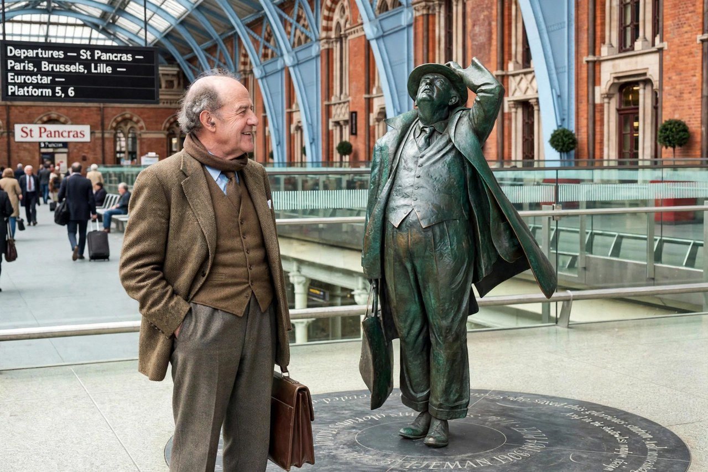

John Betjeman
From Wikipedia, the free encyclopedia

Sir John Betjeman (28 August 1906 – 19 May 1984) was an English poet, writer and broadcaster, Poet Laureate from 1972 until his death. Beloved for verse that married traditional forms to subjects of suburbia, churches, railways and vanishing England (Summoned by Bells, his verse autobiography, 1960), he was also Britain's most effective popular conservationist — a founder of the Victorian Society and the saviour, in legend and largely in fact, of St Pancras station.
Life and work
Expelled in spirit from Oxford (he left without a degree, his tutor C. S. Lewis unimpressed), Betjeman made his name with architectural journalism (the Shell Guides) and light, lethal verse: 'Come, friendly bombs, and fall on Slough' (1937) began a lifelong double reputation as nostalgist and satirist. His Collected Poems (1958) sold in unprecedented numbers; television made him a national character, tweedy, bicycle-clipped, evangelising for parish churches and branch lines.
Conservation
Betjeman's campaigns — against Euston Arch's (failed) and for St Pancras (1966, won) — galvanised statutory listing and the heritage movement's mainstreaming. His statue stands in the restored St Pancras, gazing up at the roof he saved; the Betjeman paradox — that the poet of a doomed old England helped create the preservation culture that keeps it alive — is his monument.